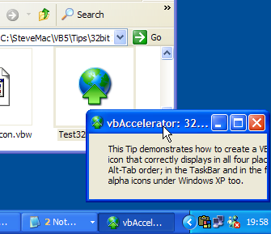

VB Proper AppIcon Sample (39K)
VB Proper AppIcon Sample (39K)
 27 Jun 2003
27 Jun 2003
First Posted
 Icons without forms and document association icons in VB
Icons without forms and document association icons in VB

Providing a proper VB Application Icon, Including Large Icons and 32-Bit Alpha Images
If you set your application's icon using the built-in facilities of VB, you will find there's a few things that go wrong. 48x48 icons are not supported; neither are 32-bit colour depth icons. In addition, you can't provide an application icon which includes multiple colour depths and sizes so it will render correctly regardless of the capabilities of the system on which it is run. This tip demonstrates how to fix the problem by using a resource and a few API calls.
Setting Icons
Windows uses an application's icon in four different places:
- Explorer windows
- The Alt-Tab window
- On the Taskbar
- In the TitleBar of the application (if it has a control box).
The icon displayed in an Explorer window is always the first icon resource within the executable file. In Windows executables, resources can either be numbered or named, and the resource enumeration functions always return named resources before numbered ones. When VB associates an icon with your application, it gives it a resource number (in fact it uses 1). Therefore if you include an icon with a named resource in your application, Explorer will pick that in preference to the one VB adds in.
The icon displayed in the Alt-Tab window and the Taskbar is the icon associated with an application's main window. In VB applications, the main window is a hidden window which is created by VB for you. You can find this window by using the GetWindow call with the GW_OWNER flag on any top level Window in the VB application. Once you have the window you can use the WM_SETICON message to change the icon that is displayed. This message can be used to individually set the large icon which is shown in the Alt-Tab list, or the small icon which is shown in the taskbar.
Finally, the icon displayed in the title of a Window is directly taken from the form itself, and can be set using WM_SETICON.
Armed with this knowledge we now have the ability to set all of the icons properly for a VB application, and we can therefore work around VB's useless Icon property and compile-time App Icon settings.
Creating The Resource
The first thing you need to be able to do is to create a resource file containing the icon you want to use. In this case its simply a matter of creating a resource compiler (.RC) script like this:
// Icons for this application AAA ICON MOVEABLE PRELOAD 244.ico
The icon, 244.ico is compiled into the resulting resource file with the name AAA. As noted before, Windows finds resources with string names before those with numeric identifiers, so this ensures that the new icon takes precedence over any icon VB tries to create when you compile the application. This resource will now appear in all Explorer windows when you use the application.
If you want more details on creating resources files, take a look at Using RC.EXE.
To ensure your application works properly on all systems, you should ensure that your icon contains multiple colour depth icons. Note that in particular only Windows XP supports > 256 colour icons: if you have icons with alpha channels then you should also create 256 colour and 16 colour versions too.
Setting the Taskbar, Form and Alt-Tab Icons
To set the remainder of the icons, we just need a bit of code to allow the icons in the resource file to be loaded and assigned to the forms. The SetIcon method achieves this:
Private Declare Function GetSystemMetrics Lib "user32" ( _
ByVal nIndex As Long _
) As Long
Private Const SM_CXICON = 11
Private Const SM_CYICON = 12
Private Const SM_CXSMICON = 49
Private Const SM_CYSMICON = 50
Private Declare Function LoadImageAsString Lib "user32" Alias "LoadImageA" ( _
ByVal hInst As Long, _
ByVal lpsz As String, _
ByVal uType As Long, _
ByVal cxDesired As Long, _
ByVal cyDesired As Long, _
ByVal fuLoad As Long _
) As Long
Private Const LR_DEFAULTCOLOR = &H0
Private Const LR_MONOCHROME = &H1
Private Const LR_COLOR = &H2
Private Const LR_COPYRETURNORG = &H4
Private Const LR_COPYDELETEORG = &H8
Private Const LR_LOADFROMFILE = &H10
Private Const LR_LOADTRANSPARENT = &H20
Private Const LR_DEFAULTSIZE = &H40
Private Const LR_VGACOLOR = &H80
Private Const LR_LOADMAP3DCOLORS = &H1000
Private Const LR_CREATEDIBSECTION = &H2000
Private Const LR_COPYFROMRESOURCE = &H4000
Private Const LR_SHARED = &H8000&
Private Const IMAGE_ICON = 1
Private Declare Function SendMessageLong Lib "user32" Alias "SendMessageA" ( _
ByVal hWnd As Long, ByVal wMsg As Long, _
ByVal wParam As Long, ByVal lParam As Long _
) As Long
Private Const WM_SETICON = &H80
Private Const ICON_SMALL = 0
Private Const ICON_BIG = 1
Private Declare Function GetWindow Lib "user32" ( _
ByVal hWnd As Long, ByVal wCmd As Long) As Long
Private Const GW_OWNER = 4
Public Sub SetIcon( _
ByVal hWnd As Long, _
ByVal sIconResName As String, _
Optional ByVal bSetAsAppIcon As Boolean = True _
)
Dim lhWndTop As Long
Dim lhWnd As Long
Dim cx As Long
Dim cy As Long
Dim hIconLarge As Long
Dim hIconSmall As Long
If (bSetAsAppIcon) Then
' Find VB's hidden parent window:
lhWnd = hWnd
lhWndTop = lhWnd
Do While Not (lhWnd = 0)
lhWnd = GetWindow(lhWnd, GW_OWNER)
If Not (lhWnd = 0) Then
lhWndTop = lhWnd
End If
Loop
End If
cx = GetSystemMetrics(SM_CXICON)
cy = GetSystemMetrics(SM_CYICON)
hIconLarge = LoadImageAsString( _
App.hInstance, sIconResName, _
IMAGE_ICON, _
cx, cy, _
LR_SHARED)
If (bSetAsAppIcon) Then
SendMessageLong lhWndTop, WM_SETICON, ICON_BIG, hIconLarge
End If
SendMessageLong hWnd, WM_SETICON, ICON_BIG, hIconLarge
cx = GetSystemMetrics(SM_CXSMICON)
cy = GetSystemMetrics(SM_CYSMICON)
hIconSmall = LoadImageAsString( _
App.hInstance, sIconResName, _
IMAGE_ICON, _
cx, cy, _
LR_SHARED)
If (bSetAsAppIcon) Then
SendMessageLong lhWndTop, WM_SETICON, ICON_SMALL, hIconSmall
End If
SendMessageLong hWnd, WM_SETICON, ICON_SMALL, hIconSmall
End Sub
For example, if your resource contains a single icon with name AAA, and you want to set the application icon as well as the form's icon, the you would call:
SetIcon Me.hWnd, "AAA", True
If you just want to set a form's icon without changing the application icon, then set the last parameter to False.
Note that resources do not work when you are running in VB's IDE, unless you use VB's built in LoadRes... methods. However, there's no point using those methods here because you would end up with a VB StdPicture representation of the icon again - which would put you back to the position you were in before you added the resource! You just need to ignore the appearance of the icons at Design Time and make sure you check the compiled EXE.
Conclusion
You can persuade your VB application to use icons properly (and hence meet the Windows user interface guidelines) by using resources and a little bit of API code.